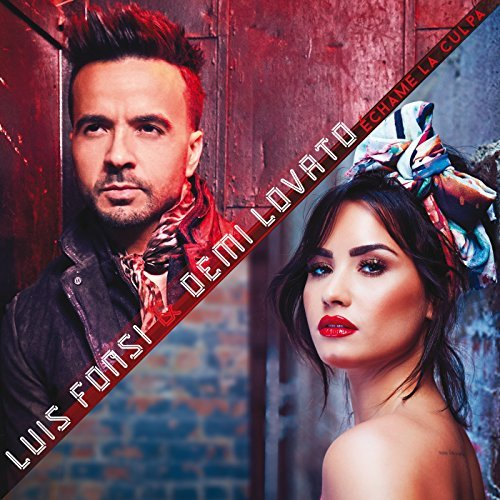
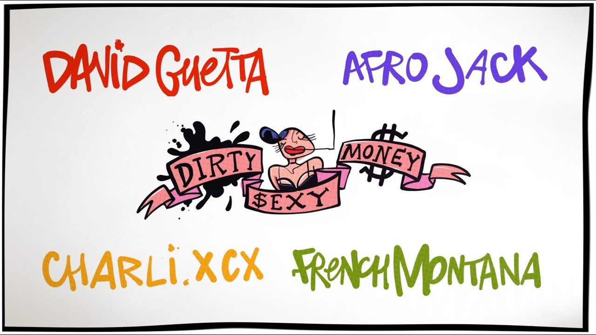
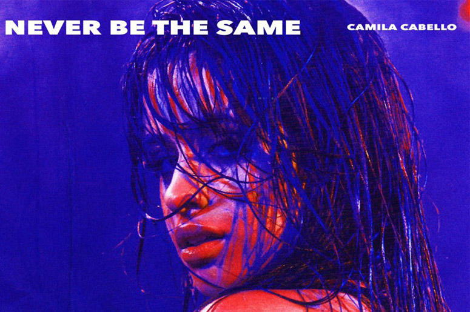
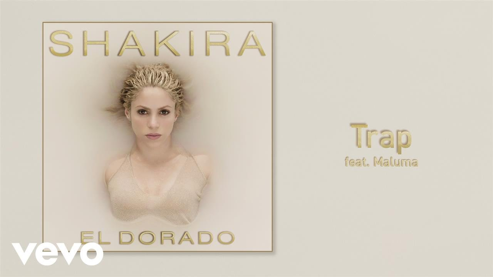
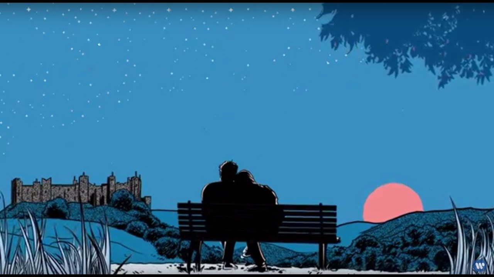
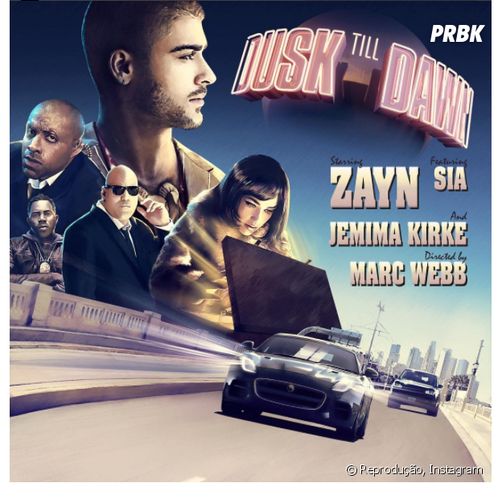
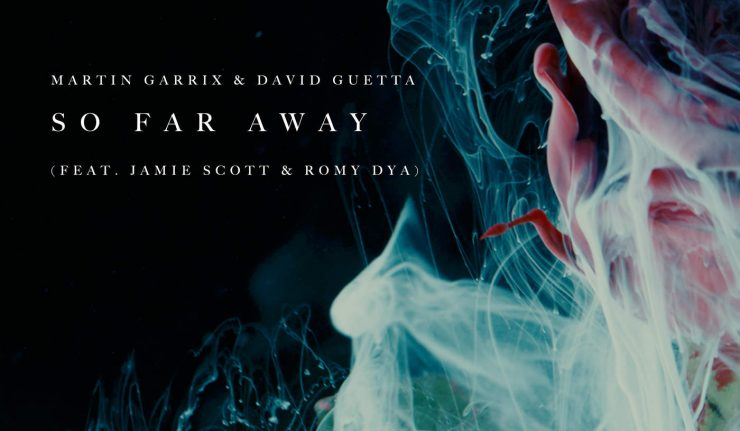
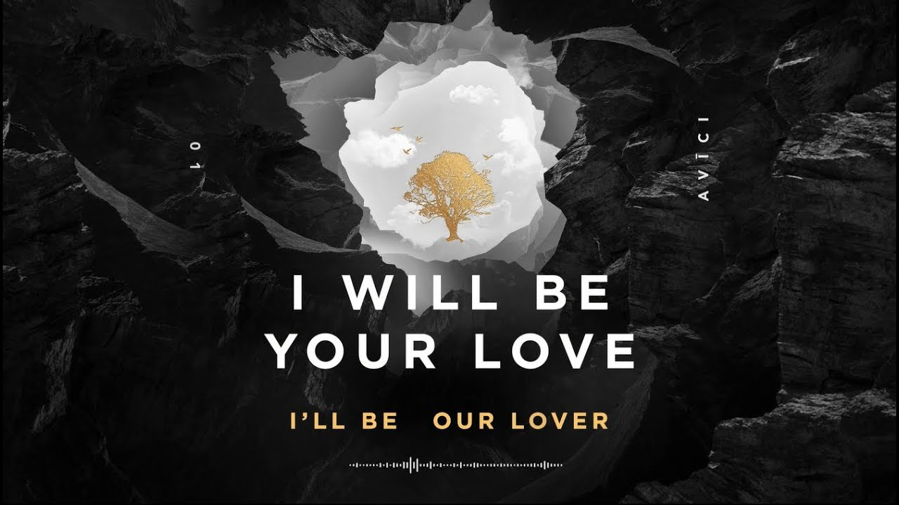
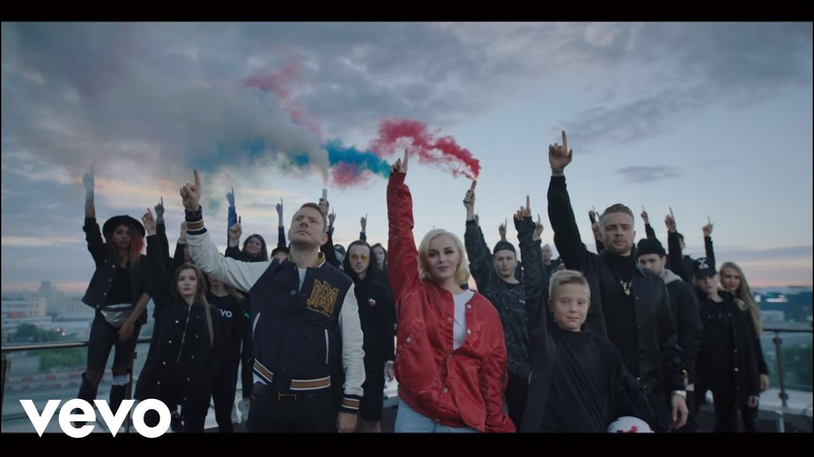

ALL-TOP
ALL-TOP
| Decima Cancion del Top:
-Luis Fonsi, Demi Lovato – Échame La Culpa
Luis Fonsi con Demi Lovato entran en la lista de música 2018 para quedarse en el número 10 con una de las canciones más escuchadas en 2017 que ha sido Échame la culpa:
|
 |
| Novena Cancion del Top:
Maluma – Corazón ft. Nego do Borel
Nuevo videoclip de Maluma llamado Corazón ft. Nego do Borel. Número 9 en la lista de música 2018:
|
|
| Octava Cancion del Top:
David Guetta & Afrojack ft Charli XCX & French Montana – Dirty Sexy Money
En el número 8 de la lista de música mas escuchada 2018 esta esta canción llamada Dirty Sexy Money , para esta canción han intervenido diferentes artistas David Guetta & Afrojack ft Charli XCX & French Montana:
|
 | Septima Cancion del Top:
Camila Cabello – Never Be The Same
Camila Cabello ya fué número uno en la lista de musica electronica mas tocada del mes anterior con la canción Havana. Este mes se queda en el número 7 con la nueva canción Never Be The Same:
|
 | Sexta Cancion del Top:
Shakira ft. Maluma – TRAP
Trap será probablemente una de las canciones más escuchadas 2018. Segunda vez que aperece Maluma en la lista de top ten 2018. Número 6 para Shakira ft. Maluma:
|
 | Quinta Cancion del Top:
Ed Sheeran – Perfect
Esta canción estaba a finales de 2017 en todas las listas en el número 1, quizás sea por el ambiente navideño de la propia canción. Estaba obligado a incluirlo en esta lista de música 2018. El artista de la canción es Ed Sheeran y la canción se llama perfect:
|
 | Cuarta Cancion del Top:
ZAYN – Dusk Till Dawn ft. Sia
Otra canción muy conocida del año pasado ha sido esta Dusk Till Dawn ft. Sia, número 2 el mes pasado en la lista de top música. Por cierto una canción muy similar a la ya conocida Diamonds de Rihanna , recomiendo también escuchar esta versión de las dos. Número 4 para ZAYN:
|
 | tercera Cancion del Top:
Martin Garrix & David Guetta – So Far Away (feat. Jamie Scott & Romy Dya)
Martin Garrix & David Guetta tenían que aparecer en esta lista de música 2018 (David Guetta por dos veces). Que podemos decir de David Guetta uno de los djs que esta en la lista de los mejores djs del mundo y es de los djs mas pagados del mundo. Número 3 este mes en la lista de música 2018 con la canción So Far Away:
|
 | Segunda Cancion del Top:
Avicii – You Be Love (Original Video) ft. Billy Raffoul
Nuevo videoclip de Avicii que parece que en este año 2018 será un buen año para este gran artista. Si quieres puedes ver aquí los mejores vídeos musicales Avicii. Número 2 de la lista música 2018 con la canción You Be Love:
|
 | Primera Cancion del Top:
Polina Gagarina y Egor Kreed – Canción Oficial Mundial Rusia 2018
Esta canción probablemente nos acompañará en el próximo mundial de rusia 2018. Número 1 de la lista de música 2018:
|
 |
Escucha la cancion ganadora!
App para musica aqui!
fuente de informacion aqui ;)
Te quedaste con ganas de mas?